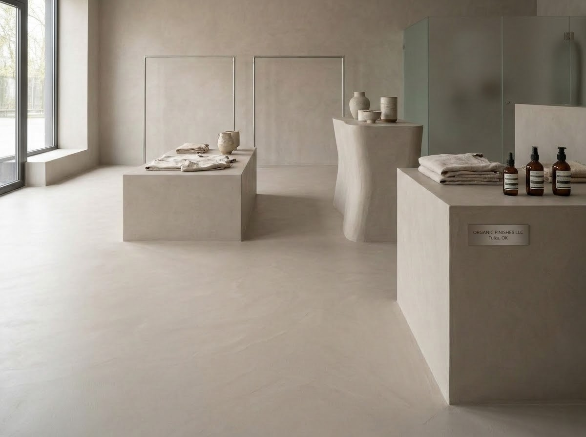

Zero Grout • Zero Demo

Seamless Microcement
Poured architectural concrete aesthetics at just 2–3 mm thick. Bonds directly over existing ceramic tile, concrete, or drywall with no tear-out demolition—ideal for floors, curbless showers, vanities, and commercial retail storefronts.
Microcement Guide & Sealer Matrix →